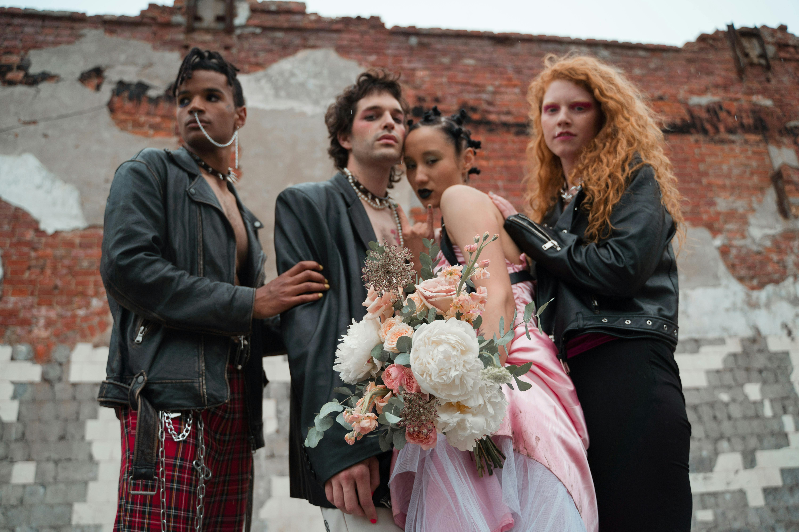
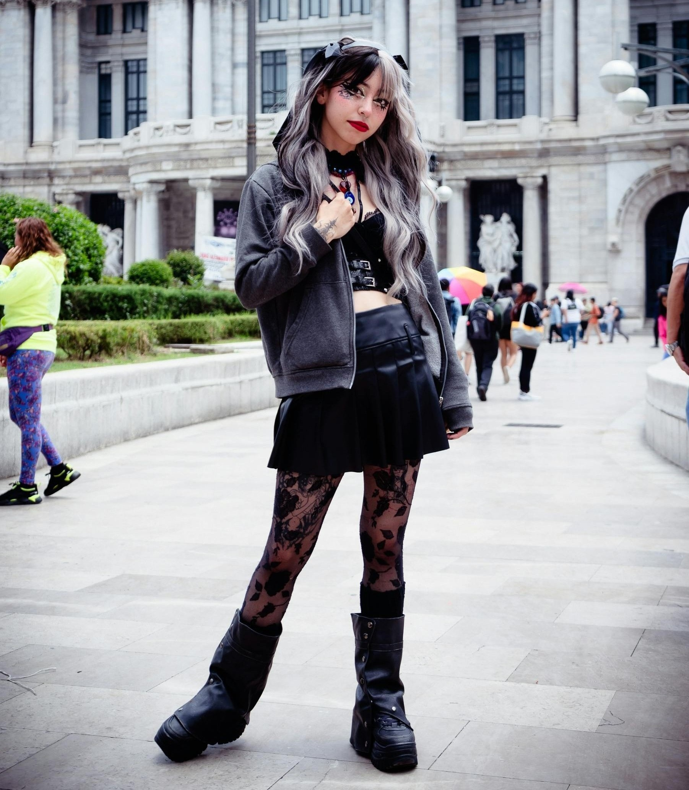
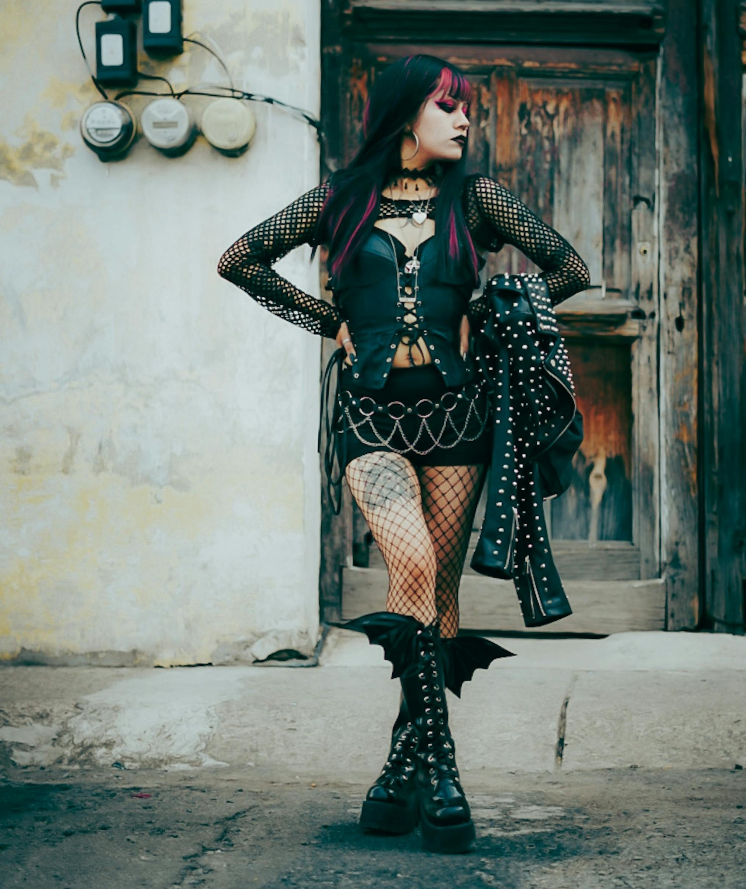
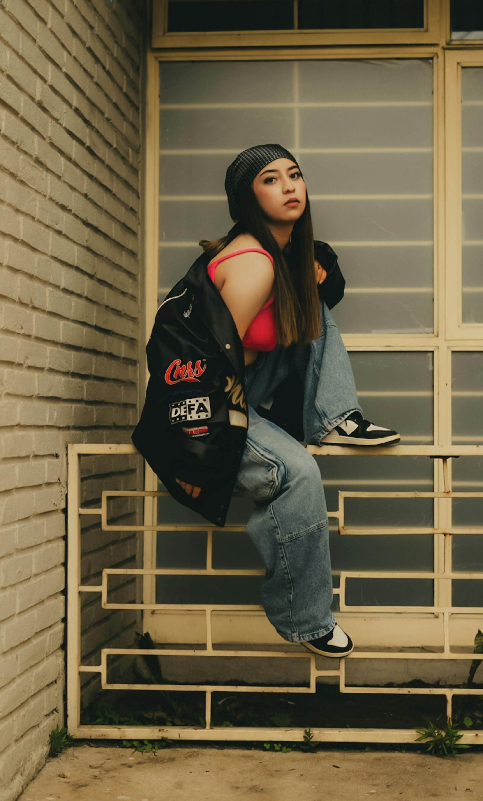
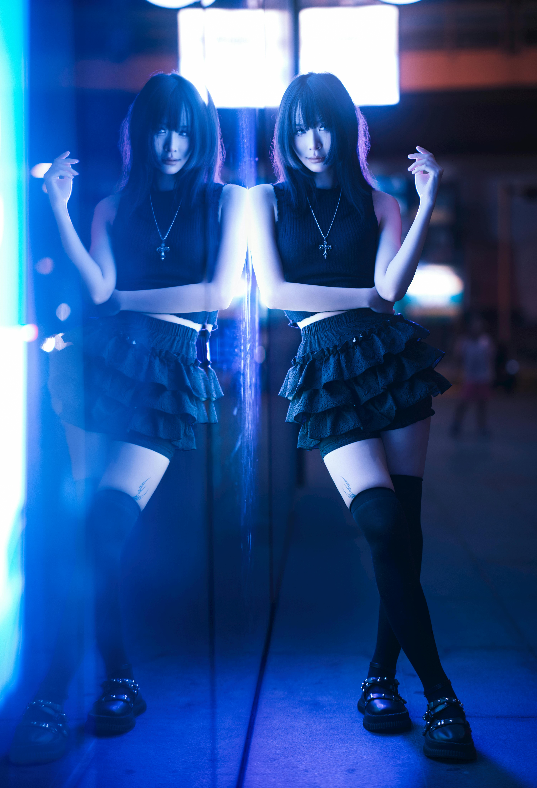
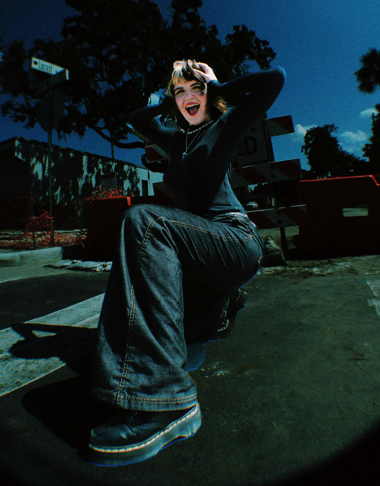

Featured Slideshow
Browse outfit inspiration and see how different alternative pieces can work together. Use the slideshow to look through different outfit ideas, silhouettes, and styling details.
How to Use It
- Use each outfit as inspiration, not an exact rule.
- Notice what pieces you already have that feel similar.
- Try changing one piece at a time to make it more wearable for you.
- Pay attention to the overall shape of the outfit.
Style Clues
- Layered textures
- Dark or repeated colors
- Statement shoes
- Belts, chains, jewelry, or bags






Use each outfit as inspiration, then swap in pieces that match your own closet, comfort level, and style.
What to Look For
- How fitted and oversized pieces are balanced.
- How shoes change the mood of the outfit.
- How accessories make simple outfits feel more finished.
- How colors repeat across clothing and details.
Try This
- Pick one outfit and recreate the shape with your own clothes.
- Choose one detail to copy, like boots, layers, or jewelry.
- Save outfit ideas that match your comfort level.
- Use the quiz or outfit formulas page when you want more direction.